Your Definite Choice for Zero Reuse Safety. Designed to fight Against Hepatitis B, C, HIV/AIDS and other Infectious Diseases.
Safety for All — Patients, Doctors, Nurses, Labs Staff & all Healthcare Workers.
Available sizes: 0.5ml, 1ml, 3ml, 5ml
Our ProductsSyringe reuse is a global health crisis.
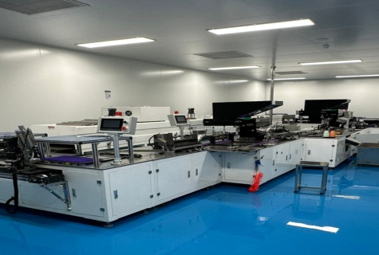
Syringe reuse remains a catastrophic global health crisis, fueling the spread of blood-borne pathogens. Syringes are among the top causes of spread of HIV/AIDS and Hepatitis-B, C and other infectious diseases. While standard auto-disable syringes are a step, they alone have not proven to be the safest solution in preventing disease transmission.
Monitor Health provides the next generation of injection safety. We don't just reduce risk — we eliminate it.
The definitive choice for zero-reuse safety, designed to fight against Hepatitis B, C, HIV/AIDS and other infectious diseases.
The End of Accidental Reuse.
Monitor Health's patented design ensures that once the syringe is used, it cannot be used again — guaranteeing patient safety and protecting healthcare workers.
The needle pulls back safely into the barrel after injection, completely eliminating the risk of accidental needle stick injuries for healthcare workers.
The plunger is designed to break after a single use, rendering the syringe permanently unusable. Zero chance of reuse — guaranteed.
Secure twist-lock connection between needle and barrel prevents accidental detachment during injection, ensuring safe and reliable drug delivery every time.
Engineered for excellence — featuring a dual safety mechanism with retractable needle and auto-disable plunger breakage.
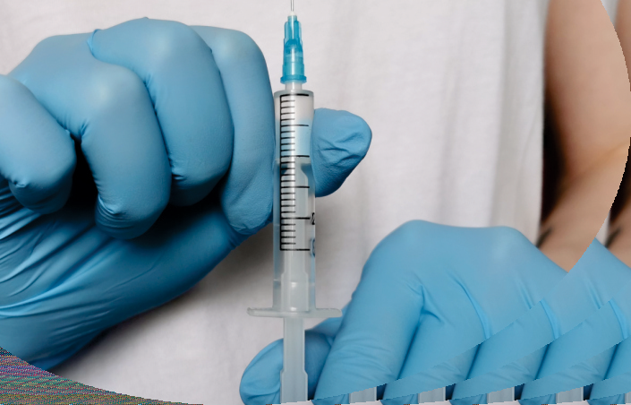
Needle pulls back safely into the barrel immediately after injection, preventing accidental needle sticks.
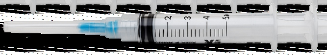
Plunger breaks after use, rendering the syringe permanently unusable. Zero chance of reuse.
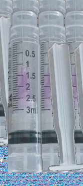
Secure connection with reliable Luer Lock system. Transparent barrel for accurate, precise dosing.
Every component is precision-designed for safety, comfort, and reliability in every medical setting.
International color coding for easy gauge identification
Engineered to reduce pain during injection
Black graduation scale for accurate dose measurement
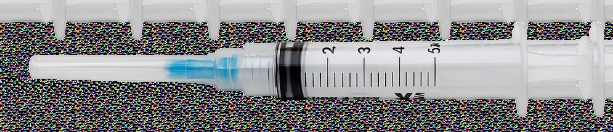
Locks within barrel after single use — permanently disabled
Smooth, precise plunger movement within the barrel
Designed for comfort and stability during administration
Available Sizes
Engineered for Excellence.
Our syringes are non-toxic, non-pyrogenic, and ETO sterilized. Available in four sizes: 0.5ml, 1ml, 3ml, and 5ml.
High-contrast black markings on transparent barrel for precise measurement
Reliable Luer Lock system ensuring a tight, leak-proof fit
Medical-grade, non-toxic polypropylene. No PHT, PVC, or MPA
Inert thermoplastic elastomer gaskets — safe for latex-sensitive patients
Non-toxic, non-pyrogenic, fully sterile — ready for safe medical use
Made entirely from non-toxic materials.
We conduct toxicity tests to confirm that our manufacturing process does not affect material safety.
No natural rubber, latex or latex derivatives used
No DEHP and no PVC intentionally added to our products
Less than 0.1% BPA with no demonstrable exposure or toxicity
No animal tissue used in any of our products
Meets or exceeds requirements set by ISO and EMA
Recyclable paper packaging for shipping case and shelf box
Available in 0.5ml, 1ml, 3ml, and 5ml
Check how your current syringe compares to our safety alternative.
| Feature | Monitor Health Syringe | Your Syringe |
|---|---|---|
| Innovative design to be safe and easy to use | ||
| Eliminate chances of reuse | ||
| Eliminate chances of accidental prick | ||
| Contains no materials of concern | ||
| Meets or exceeds requirements set by ISO and EMA | ||
| Reduced amount of materials, and recyclable packaging | ||
| Every component meets ISO requirements | ||
| Manufactured in ISO 14001-certified facility |
Monitor Health Syringes are made and shipped to you from our ISO 14001-certified facility in Faisalabad, Pakistan.
One of the most sophisticated state-of-the-art facilities in Pakistan, purpose-built for medical device manufacturing.
We manufacture at an ISO certified site, meeting the highest international standards for quality and environmental management.
With over 90% rate of recycling, increasing landfill diversions and minimizing our environmental footprint.
Tour our state-of-the-art manufacturing facility — clean-room environments, advanced machinery, and rigorous quality control at every stage.
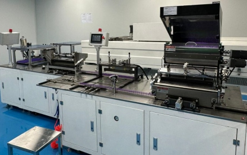
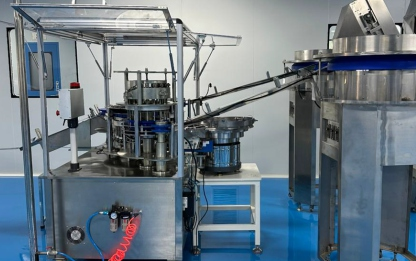
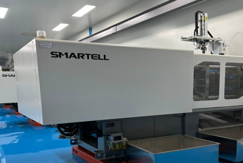
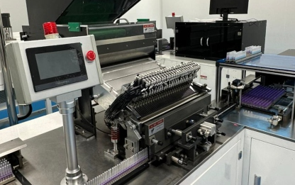
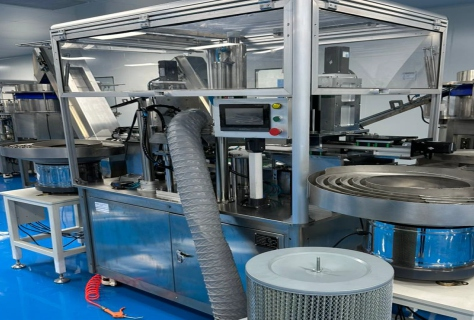
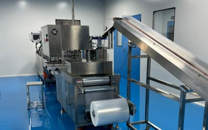
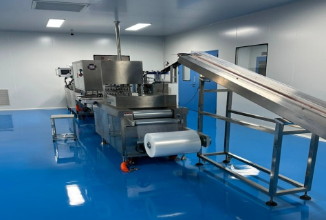
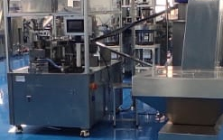
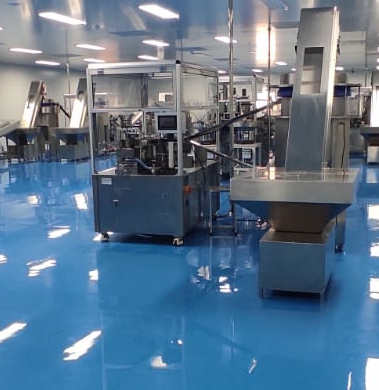
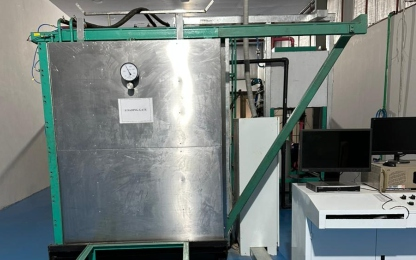
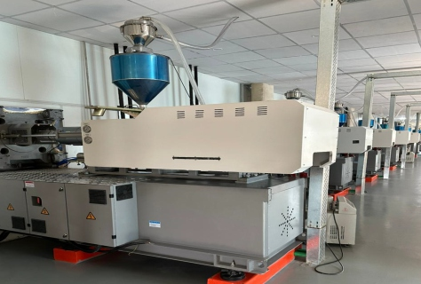
Every syringe undergoes a rigorous manufacturing process ensuring the highest standards of quality and safety.
Medical-grade polypropylene is precision-molded into syringe barrels and plungers using SMARTELL machinery.
Components are assembled in clean-room environments with automated conveyor systems ensuring precision.
Every batch undergoes rigorous quality testing to meet ISO 13485 medical device standards.
Syringes are sterilized using ethylene oxide (ETO) to ensure complete sterility for medical use.
Products are individually sealed and packed in recyclable paper packaging for safe distribution.
Every syringe is a promise of premium quality, backed by a commitment to healthcare innovation and international standards.
Quality management systems (QMS) — ensuring consistent quality in every product we manufacture.
QMS for organizations involved in the lifecycle of medical devices — meeting the highest standards for medical device manufacturing.
Framework to manage environmental responsibilities — committed to sustainable and environmentally responsible manufacturing.
Managing occupational health and safety risks — prioritizing the safety and well-being of our workforce.
ISO Certifications
0.5ml, 1ml, 3ml, 5ml
Zero-Reuse Guarantee
Recycling Rate
Join the fight against infection and injury. Choose safety. Choose Monitor Health.
#1010, Haly Tower
Sector R, DHA Phase 2
Lahore, Pakistan
Plot# 147, Phase 2
Allama Iqbal Industrial Complex
Faisalabad, Pakistan
Phone: +92-42-32171227
Web: www.monitorhealth.net